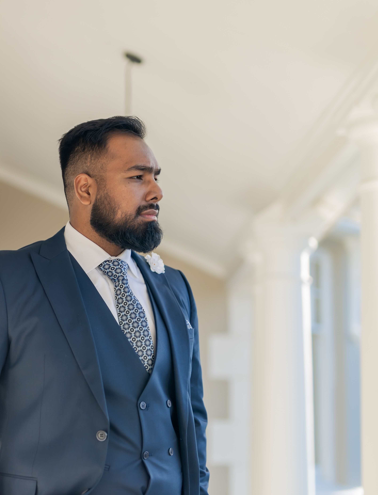

Hi! Please find my Resume for your Perusal below :)
Summary
- Education
- Work Experience
- Skills
Education
- Metric Certificate with Bachelors Pass, The Oracle Academy (2017)
-
Bachelor's Degree in Psychology and English Literature Studies,
University of Cape Town (2021)
- BA Honours in Islamic Studies, (currently completing)
Work experience
-
Sales Assistant, Handbag and Luggage (Weekends and Summer Holidays, 2016
- 2017)
- Project Manager, Supreme Scholar (Jan 2022 - Jul 2022)
- Counsellor, Supreme Scholar (Jan 2022 - Dec 2022)
- Manager, 786Foods (2021 - 2022)
Skills
- Team Member, SA Creative (2023 - present)
-
Critical and Analytical Skills: Developed through constant
problem-solving as a project manager
-
Interpersonal Skills: Enhanced through psychology degree and 6 months of
counselling experience
-
Creative Problem-Solving: Ability to approach problems from unique
angles and develop innovative solutions
